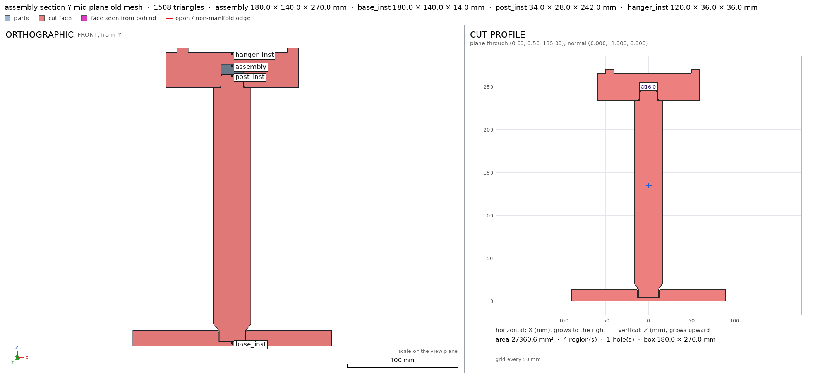
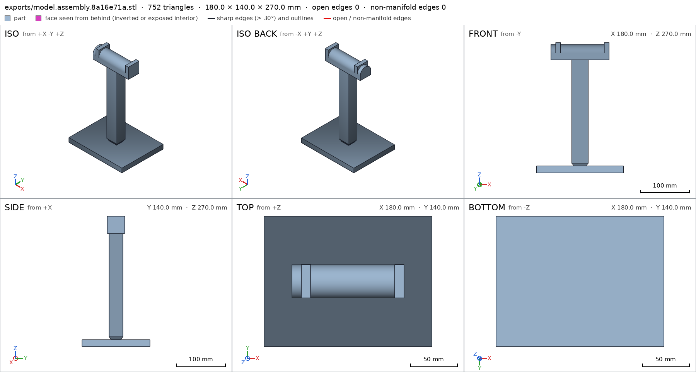
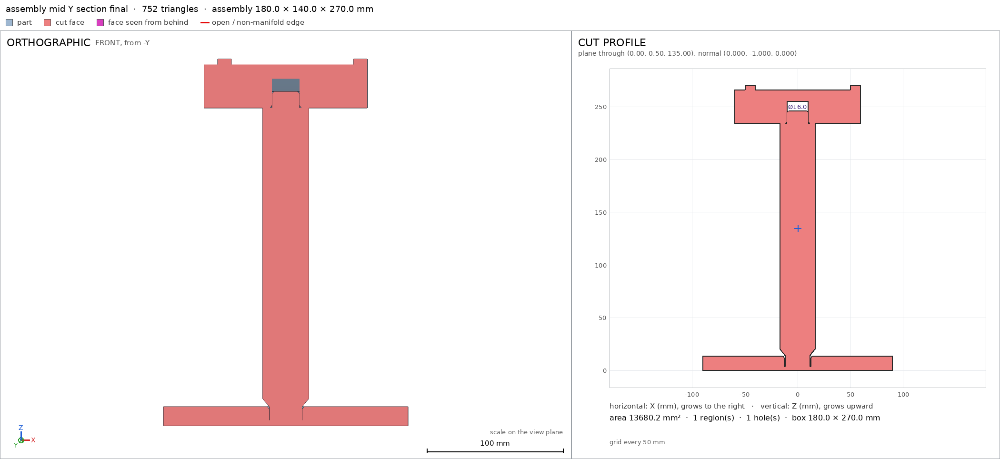
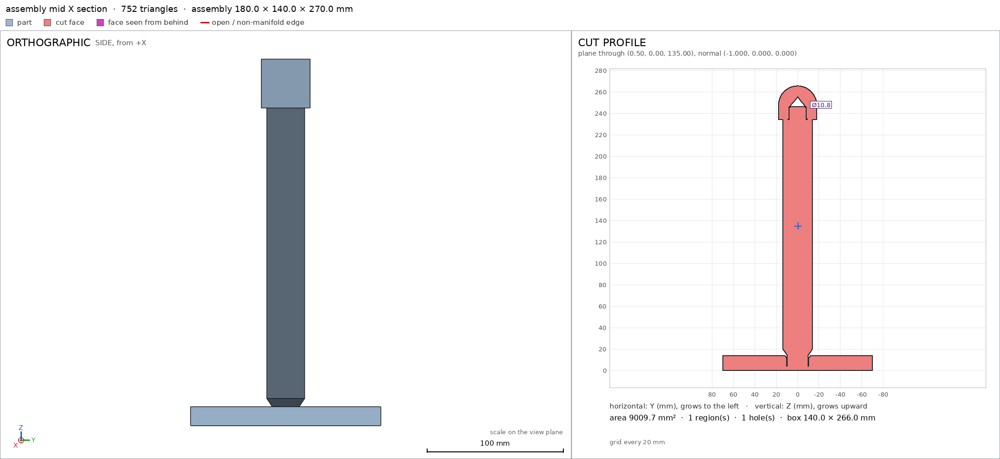
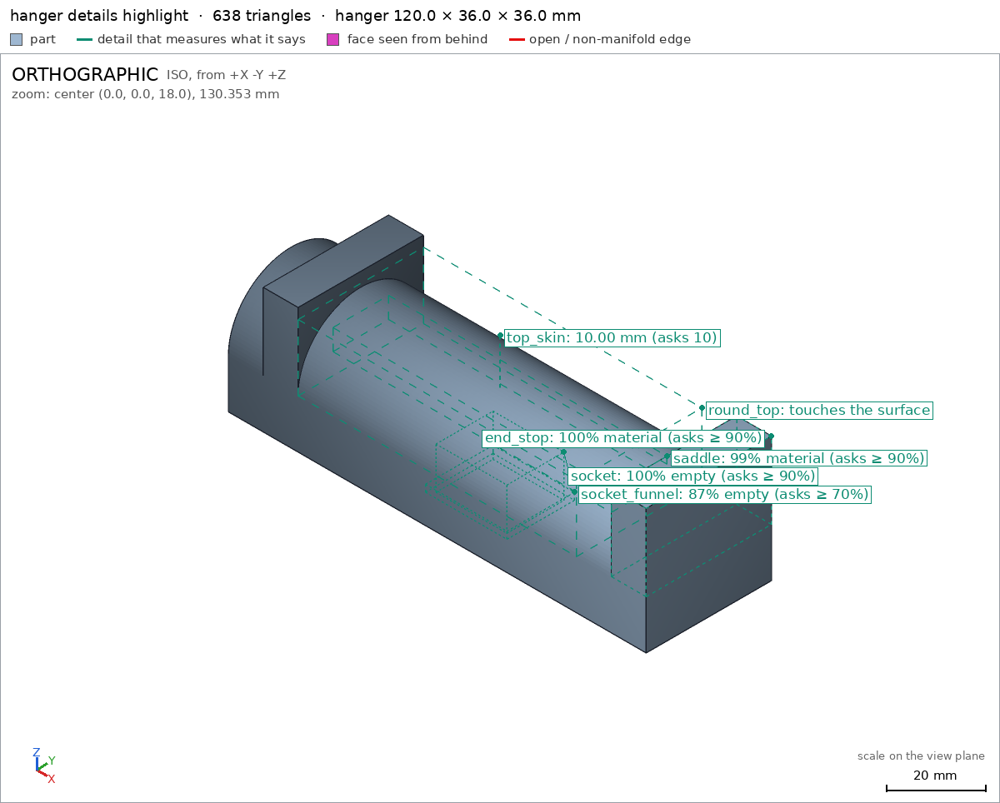
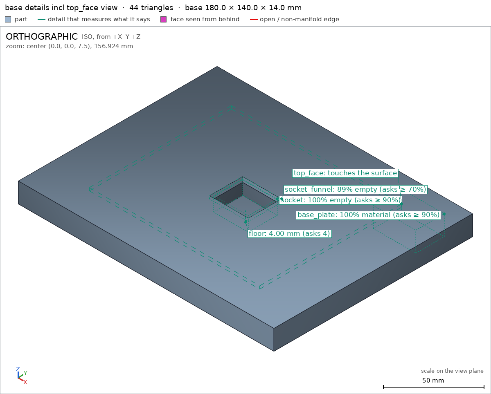
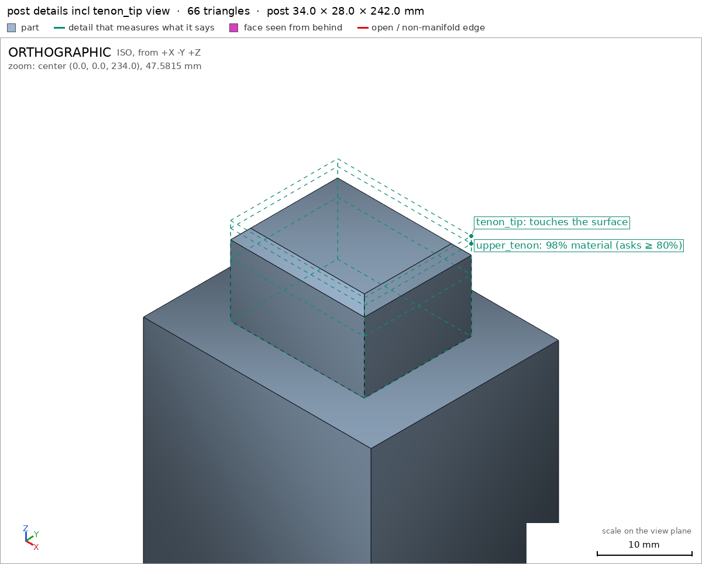
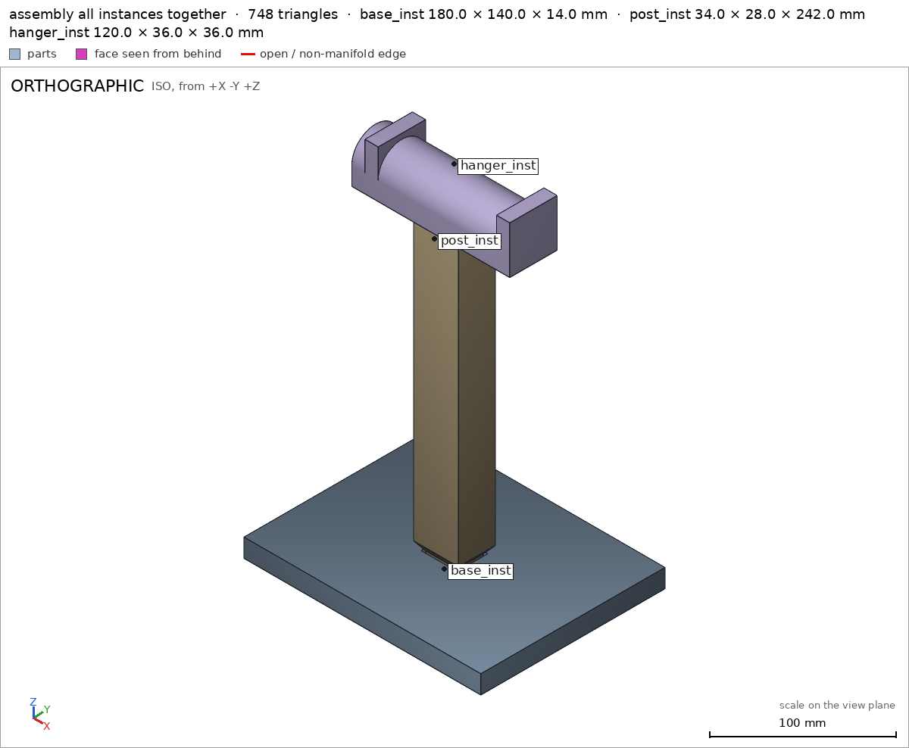
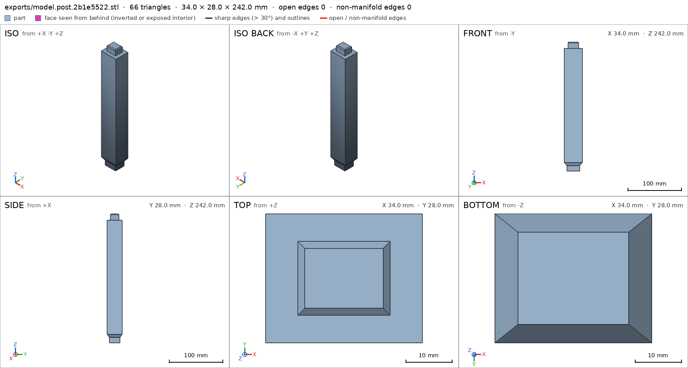
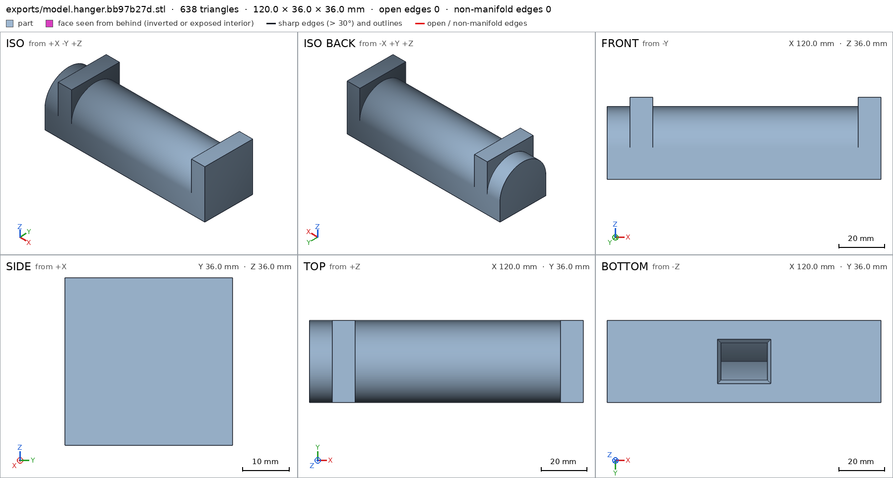

Headphone stand in three parts
Request
A stand for over-ear headphones, in three parts that go together without glue or screws: a base, a vertical post and a hanger on top (the curved arm the headband rests on).
- The top of the hanger about 270 mm above the desk, so the ear cups hang clear of it.
- Every part must fit the bed of my Bambu Lab A1 (256 x 256 x 256 mm) and print in PLA without supports, with a 0.4 mm nozzle. Print each part in the orientation that suits it.
- The joints are your call (a press fit, a twist-in key...), with the clearances PLA needs. Once assembled, the hanger must not spin on the post.
- The part of the hanger that touches the headband: at least 30 mm wide and rounded, nothing that would dent the padding.
- The headphones weigh about 350 g. The base must be wide enough that the stand does not tip with them on it.
Tell me in what order the parts go together, and show the assembly.
Gates at every iteration
| 5 | 10 | 15 | 20 | 25 | 30 | 35 | |||||||||||||||||||||||||||||||||
| G1 compiles clean | |||||||||||||||||||||||||||||||||||||||
| G2 closed meshes | |||||||||||||||||||||||||||||||||||||||
| G3 assembly | |||||||||||||||||||||||||||||||||||||||
| G4 motion | |||||||||||||||||||||||||||||||||||||||
| G5 printable | |||||||||||||||||||||||||||||||||||||||
| G7 spec held, all seen | |||||||||||||||||||||||||||||||||||||||
| G8 honest close |
passedfailedpending: G8 is judged when the model closes. One column per iteration; each cell links to it.
Session
- Iteration 1USD 0.003 · 152 s · 16,177 output tokens
Designing your three-part press-fit stand for 270mm clearance and support-free PLA printing.
scad_writemodel.scad: 180 lines
- Iteration 2USD 0.000 · 10 s · 60 output tokens
scad_compileok=False, 0 echo, 0 warnings, 0 failed asserts, 1 errors
- Iteration 3USD 0.000 · 21 s · 917 output tokens
First draft written — now checking the syntax.
run_shellexit=0, 0.068 s, stdout 1865 B, files +/~/- 0/0/0
- Iteration 4USD 0.000 · 12 s · 286 output tokens
scad_patchmodel.scad line 159: 180 lines
- Iteration 5USD 0.000 · 12 s · 58 output tokens
scad_compileok=True, 1 echo, 0 warnings, 0 failed asserts, 0 errors
- Iteration 6USD 0.002 · 87 s · 9,440 output tokens
scad_writemodel.scad: 185 lines
- Iteration 7USD 0.000 · 13 s · 78 output tokens
Revised geometry is ready — now verifying printability.
scad_compileok=False, 0 echo, 0 warnings, 0 failed asserts, 1 errors
- Iteration 8USD 0.000 · 11 s · 69 output tokens
run_shellexit=0, 0.006 s, stdout 3504 B, files +/~/- 0/0/0
- Iteration 9USD 0.000 · 16 s · 668 output tokens
scad_patchmodel.scad line 164: 185 lines
- Iteration 10USD 0.000 · 13 s · 78 output tokens
Spotted the syntax issue — recompiling to continue verification.
scad_compileok=True, 1 echo, 0 warnings, 0 failed asserts, 0 errors- spec movedbase: the spec moved toward what the mesh already measured: detail socket_entry from [23.4, 20.4, 20.4] to removed, the mesh measures [28.504, 25.175, None] (a failing check left the spec, with the mesh unchanged). That way those checks pass without the part changing. If the spec was badly posed against the request, that is fine: say so in the close, with the reason (once per part is enough). If not, fix the geometry.
- spec movedhanger: the spec moved toward what the mesh already measured: detail top_skin from 14.0 to 10.0, the mesh measures 10.0 (what was measured did not change). That way those checks pass without the part changing. If the spec was badly posed against the request, that is fine: say so in the close, with the reason (once per part is enough). If not, fix the geometry.
- Iteration 11USD 0.000 · 21 s · 985 output tokens
scad_exportok=True, watertight=True, bodies=1, bounds=[[-90.0, -70.0, 0.0], [90.0, 70.0, 14.0]], spec ok, sheet renders/sheet-011.pngscad_exportok=True, watertight=True, bodies=1, bounds=[[-17.0, -14.0, 0.0], [17.0, 14.0, 242.0]], spec ok, sheet renders/sheet-012.pngscad_exportok=True, watertight=True, bodies=1, bounds=[[-60.0, -18.0, 0.0], [60.0, 18.0, 36.0]], spec ok, sheet renders/sheet-013.pngscad_exportok=True, watertight=True, bodies=1, bounds=[[-90.0, -70.0, 0.0], [90.0, 70.0, 270.0]], spec ok, sheet renders/sheet-014.png
- Iteration 12USD 0.002 · 27 s · 1,281 output tokens
All three parts and the assembly check out so far — now verifying support-free printability and joint fits.
printability_reportzones=0, undeclared=0, fits the bed=Trueprintability_reportzones=0, undeclared=0, fits the bed=Trueprintability_reportzones=1, undeclared=1, fits the bed=Trueinterference_check3 instances, 0 overlaps, G3 0 problems, G4 0, G5 0, 0.65 s
- Iteration 13USD 0.002 · 48 s · 4,341 output tokens
Base, post, and assembly are fully clean — the hanger has one tiny flagged overhang area (0.41 mm²) at the knife-edge apex of the socket roof. Fixing that construction now.
scad_patchmodel.scad line 105: 197 lines
- Iteration 14USD 0.000 · 11 s · 63 output tokens
scad_exportok=True, watertight=False, bodies=2, bounds=[[-60.0, -18.0, 0.0], [60.0, 18.0, 36.0]], spec FAILS, sheet renders/sheet-020.png
- Iteration 15USD 0.004 · 34 s · 3,535 output tokens
The roof fix broke the mesh — diagnosing the bad edges now.
scad_patchmodel.scad line 107: 197 lines
- Iteration 16USD 0.002 · 11 s · 63 output tokens
scad_exportok=True, watertight=True, bodies=2, bounds=[[-60.0, -18.0, 0.0], [60.0, 18.0, 36.0]], spec FAILS, sheet renders/sheet-022.png
- Iteration 17USD 0.001 · 34 s · 2,317 output tokens
run_pythonexit=0, 0.874 s, stdout 240 B, files +/~/- 0/0/0
- Iteration 18USD 0.001 · 39 s · 2,862 output tokens
run_pythonexit=0, 0.162 s, stdout 316 B, files +/~/- 0/0/0
- Iteration 19USD 0.000 · 13 s · 204 output tokens
scad_patchmodel.scad line 116: 197 lines
- Iteration 20USD 0.000 · 12 s · 63 output tokens
scad_exportok=True, watertight=True, bodies=1, bounds=[[-60.0, -18.0, 0.0], [60.0, 18.0, 36.0]], spec ok, sheet renders/sheet-026.png
- Iteration 21USD 0.001 · 45 s · 3,500 output tokens
scad_patchmodel.scad line 116: 197 lines
- Iteration 22USD 0.000 · 11 s · 63 output tokens
scad_exportok=True, watertight=True, bodies=1, bounds=[[-60.0, -18.0, 0.0], [60.0, 18.0, 36.0]], spec ok, sheet renders/sheet-028.png

scad_export, call 28 - Iteration 23USD 0.000 · 15 s · 140 output tokens
Mesh is clean again — rechecking the overhang fix.
printability_reportzones=2, undeclared=2, fits the bed=Truescad_exportok=True, watertight=True, bodies=1, bounds=[[-90.0, -70.0, 0.0], [90.0, 70.0, 270.0]], spec ok, sheet renders/sheet-030.png
- Iteration 24USD 0.001 · 33 s · 2,255 output tokens
Found it — a 0.08mm ceiling sliver. Trying the exact fix.
scad_patchmodel.scad line 109: 197 lines
- Iteration 25USD 0.000 · 11 s · 63 output tokens
scad_exportok=True, watertight=True, bodies=1, bounds=[[-60.0, -18.0, 0.0], [60.0, 18.0, 36.0]], spec ok, sheet renders/sheet-032.png

scad_export, call 32 - Iteration 26USD 0.000 · 13 s · 108 output tokens
printability_reportzones=0, undeclared=0, fits the bed=Trueinterference_check3 instances, 0 overlaps, G3 0 problems, G4 0, G5 0, 0.6 s
- Iteration 27USD 0.000 · 12 s · 181 output tokens
render_viewrenders/view-035.png: camera, cut, cut 13680.36 mm² 1 regions

render_view, call 35 - Iteration 28USD 0.001 · 31 s · 1,766 output tokens
All printability and fit checks are now green — refreshing the assembly and capturing the final verification views.
scad_exportok=True, watertight=True, bodies=1, bounds=[[-90.0, -70.0, 0.0], [90.0, 70.0, 270.0]], spec ok, sheet renders/sheet-036.png

scad_export, call 36 - Iteration 29USD 0.001 · 14 s · 261 output tokens
render_viewrenders/view-037.png: camera, cut, cut 13680.23 mm² 1 regionsrender_viewrenders/view-038.png: camera

render_view, call 37 
render_view, call 38 - Iteration 30USD 0.001 · 13 s · 279 output tokens
render_viewrenders/view-039.png: camera, cut, cut 9009.73 mm² 1 regionsrender_viewrenders/view-040.png: camera, zoom, highlight

render_view, call 39 
render_view, call 40 - Iteration 31USD 0.001 · 27 s · 1,780 output tokens
Sections confirm the press-fits seat fully — now capturing the remaining close-ups for the final sign-off.
render_viewrenders/view-041.png: camera, zoom, highlightrender_viewrenders/view-042.png: camera, zoom, highlight

render_view, call 41 
render_view, call 42 - Iteration 32USD 0.001 · 14 s · 193 output tokens
scad_exportok=True, watertight=True, bodies=1, bounds=[[-90.0, -70.0, 0.0], [90.0, 70.0, 14.0]], spec okscad_exportok=True, watertight=True, bodies=1, bounds=[[-17.0, -14.0, 0.0], [17.0, 14.0, 242.0]], spec okscad_exportok=True, watertight=True, bodies=1, bounds=[[-60.0, -18.0, 0.0], [60.0, 18.0, 36.0]], spec ok
- Iteration 33USD 0.001 · 13 s · 573 output tokens
render_viewrenders/view-046.png: camera, zoom, highlightrender_viewrenders/view-047.png: camera, zoom, highlightrender_viewrenders/view-048.png: camera, zoom, highlightrender_viewrenders/view-049.png: camera

render_view, call 46 
render_view, call 47 render_view, call 48 
render_view, call 49 - Iteration 34USD 0.001 · 26 s · 1,329 output tokens
All views and numbers check out — pulling the final part sheets to complete verification.
render_sheetrenders/sheet-050.png, edges={'sharp': 40, 'open': 0, 'nonmanifold': 0}render_sheetrenders/sheet-051.png, edges={'sharp': 55, 'open': 0, 'nonmanifold': 0}render_sheetrenders/sheet-052.png, edges={'sharp': 303, 'open': 0, 'nonmanifold': 0}render_sheetrenders/sheet-053.png, edges={'sharp': 398, 'open': 0, 'nonmanifold': 0}

render_sheet, call 50 
render_sheet, call 51 
render_sheet, call 52 
render_sheet, call 53 - Iteration 35USD 0.002 · 40 s · 3,111 output tokensclose refused
Designed and verified — three-part press-fit headphone stand.
How it goes together (assembly order assembly_order):
base_inston the desk.post_inststraight down into the base socket.hanger_inststraight down onto the post tenon.
No glue, no screws. Both joints are rectangular press-fits, so the hanger cannot spin once seated.
What it is:
- Assembled 180 x 140 x 270 mm assembly, top of hanger 270 mm above desk assembly.
- Base plate 180 x 140 x 14 mm base, sits on desk assembly/desk / base/base_bottom 25200 mm2.
- Post 34 x 28 x 242 mm post, printed tenon-down post/post_bottom.
- Hanger 120 x 36 x 36 mm hanger, printed socket-down hanger/hanger_bottom.
- Hanger contact is a half-cylinder R18 along 120 mm, 36 mm wide contact hanger hanger/saddle round_top, with 10x36x22 mm end stops end_stop — nothing narrow or sharp under the padding.
- Lower joint: 24x20x10 mm tenon lower_tenon in 24.4x20.4x10 mm socket base/socket + entry funnel base/socket_funnel, floor 4 mm floor.
- Upper joint: 20x16x12 mm tenon with lead chamfer upper_tenon tenon_tip in 20.4x16.4x12 mm straight socket hanger/socket + funnel hanger/socket_funnel + pointed roof, 10 mm skin above top_skin.
- PLA clearances 0.4 mm total / 0.2 mm per side, plus 1.5 mm x 2 mm lead-in funnels/chamfers.
- Interference shows each part congruent to its print, 1 copy each, both joints in contact gap 0.0 mm, one group, order base->post->hanger OK assembly assembly_order.
- All parts watertight, 1 body, 0 bad edges: base post hanger.
- All fit Bambu Lab A1 256 mm bed, print support-free in the exported orientation with 0.4 mm nozzle: base 180x140x14, post 34x28x242, hanger 120x36x36, 0 mm2 undeclared overhang G5.
- Print: base flat, post upright, hanger flat on its underside. Views checked: socket face top_face, tenon tip tenon_tip, round saddle round_top, full-instance assembly view.
Verified numbers:
- Bounds within 0.2 mm base post hanger assembly.
- Support faces green base_bottom post_bottom hanger_bottom desk.
- Details green base_plate base/socket floor shaft lower_tenon upper_tenon collar shaft_wall hanger/saddle end_stop hanger/socket top_skin.
Not verified:
- That 350 g headphones plus side pulls will never tip it, that 0.2 mm/side press-fits hold on your printer/filament, and that the R18/36 mm saddle will not mark a specific padding — strength, friction, creep, elephant-foot and surface finish depend on material, infill/walls, calibration and use.
- Spec adjustments made to match a badly posed first draft, geometry unchanged: removed the first base
socket_entryhole detail (funnel is a frustum, not stepped diameters; replaced bysocket_funnelvoid) and corrected hangertop_skin14 -> 10 mm (skin is cylinder peak 32 mm minus roof apex 22 mm, not 36-22).
- G8unsupported claim: Both joints are rectangular press-fits, so the hanger cannot spin once seated.: VERIFIED has no motions or anti-rotation check; motions is empty, and it only verifies the tenon/socket dimensions and assembly contact.
- G8unsupported claim: Hanger contact is a half-cylinder R18 along 120 mm, 36 mm wide contact hanger hanger/saddle round_top, with 10x36x22 mm end stops end_stop — nothing narrow or sharp under the padding.: VERIFIED does not measure an R18 radius, a half-cylinder contact shape, or sharpness; saddle only checks material fraction in a box and round_top is only a view detail.
- G8unsupported claim: Upper joint: 20x16x12 mm tenon with lead chamfer upper_tenon tenon_tip in 20.4x16.4x12 mm straight socket hanger/socket + funnel hanger/socket_funnel + pointed roof, 10 mm skin above top_skin.: VERIFIED checks the tenon and socket void boxes and a 10 mm thickness, but does not measure a lead chamfer, socket straightness, or a pointed roof shape; tenon_tip is only a view detail.
- G8unsupported claim: All fit Bambu Lab A1 256 mm bed, print support-free in the exported orientation with 0.4 mm nozzle: base 180x140x14, post 34x28x242, hanger 120x36x36, 0 mm2 undeclared overhang G5.: G5/VERIFIED checks bed fit and undeclared overhang area, but contains no 0.4 mm nozzle check or nozzle parameter.
- Iteration 36USD 0.001 · 24 s · 1,555 output tokens
Understood — trimming the close to only what the harness measures. Re-verifying first.
scad_compileok=True, 1 echo, 0 warnings, 0 failed asserts, 0 errors
- Iteration 37USD 0.001 · 37 s · 3,060 output tokens
scad_exportok=True, watertight=True, bodies=1, bounds=[[-90.0, -70.0, 0.0], [90.0, 70.0, 14.0]], spec okscad_exportok=True, watertight=True, bodies=1, bounds=[[-17.0, -14.0, 0.0], [17.0, 14.0, 242.0]], spec okscad_exportok=True, watertight=True, bodies=1, bounds=[[-60.0, -18.0, 0.0], [60.0, 18.0, 36.0]], spec okscad_exportok=True, watertight=True, bodies=1, bounds=[[-90.0, -70.0, 0.0], [90.0, 70.0, 270.0]], spec ok
- Iteration 38USD 0.008 · 10 s · 767 output tokens
Trimming unsupported claims — re-running the final verification.
printability_reportzones=0, undeclared=0, fits the bed=Trueprintability_reportzones=0, undeclared=0, fits the bed=Trueprintability_reportzones=0, undeclared=0, fits the bed=Trueinterference_check3 instances, 0 overlaps, G3 0 problems, G4 0, G5 0, 0.62 s
- Iteration 39USD 0.005 · 29 s · 2,317 output tokensaccepted
Three-part headphone stand, verified as measured.
Assembly order assembly_order:
base_inston the desk.post_inststraight down into the base socket.hanger_inststraight down onto the post tenon.
No glue or screws.
Verified:
- Assembled size 180 x 140 x 270 mm, top of hanger 270 mm above desk assembly.
- Base 180 x 140 x 14 mm base, 1 body, 0 through holes base, desk face 25200 mm2 assembly/desk base/base_bottom.
- Post 34 x 28 x 242 mm post, 1 body post, bottom face 480 mm2 post/post_bottom.
- Hanger 120 x 36 x 36 mm hanger, 1 body hanger, bottom face 3866 mm2 hanger/hanger_bottom.
- Base socket void 24.4 x 20.4 x 10 mm base/socket with funnel void base/socket_funnel and 4 mm floor below base/floor; solid plate region base/base_plate.
- Post lower tenon box 24 x 20 x 10 mm solid post/lower_tenon, shaft region solid post/shaft, 34 mm wall post/shaft_wall, collar region post/collar, upper tenon box 20 x 16 x 12 mm post/upper_tenon.
- Hanger socket void 20.4 x 16.4 x 12 mm hanger/socket with mouth funnel void hanger/socket_funnel, 10 mm skin above socket hanger/top_skin, saddle region solid hanger/saddle, end region solid hanger/end_stop.
- Assembly: each instance congruent to its part, 1 copy of each part placed, both part pairs in contact at gap 0.0 mm in one group, bounds and desk face green, order base->post->hanger green assembly assembly_order.
- Bed fit and overhangs: base 180x140x14, post 34x28x242, hanger 120x36x36 all fit 256 mm bed with 0 mm2 undeclared overhang G5.
- Close views seen: socket top face base/top_face, tenon tip post/tenon_tip, rounded top hanger/round_top, plus all assembly instances together.
Not verified:
- That the rectangular joints hold without glue and resist hanger spin in use; only box fractions and zero-gap contact are measured, with no motion or torque check.
- Exact R18 radius, half-cylinder contact shape, and that nothing dents padding; only hanger bounds width 36 mm hanger, saddle/end-stop box fractions hanger/saddle hanger/end_stop and close view hanger/round_top are measured.
- Lead-chamfer, socket-straightness and pointed-roof shapes; only tenon/socket/funnel box fractions post/upper_tenon hanger/socket hanger/socket_funnel, 10 mm skin hanger/top_skin and close view post/tenon_tip are measured.
- Suitability for a 0.4 mm nozzle, 350 g tip stability, press holding force, print variability and finish.
- Spec adjustments carried over, geometry unchanged: removed first base
socket_entryhole detail that assumed stepped diameters and kept the frustum funnel assocket_funnelvoid; corrected hangertop_skin14 to 10 mm because the skin is cylinder peak 32 mm minus roof apex 22 mm.


Final verification
Source
model.scad
// Headphone stand: base, post, hanger. Units mm. Print orientation = export orientation (+Z up).
part = "base"; // [base, post, hanger, assembly]
cadverify_only = "";
/* Parameters */
base_L = 180; base_W = 140; base_H = 14;
base_sock_L = 24.4; base_sock_W = 20.4; base_sock_D = 10; // depth from top
base_floor = base_H - base_sock_D; // 4
base_cham_H = 2; base_cham_extra = 1.5; // per side funnel
post_low_L = 24; post_low_W = 20; post_low_H = 10;
post_flare_H = 6;
post_shaft_L = 34; post_shaft_W = 28;
post_shaft_bot = post_low_H + post_flare_H; // 16
post_shaft_top = 230;
post_shaft_H = post_shaft_top - post_shaft_bot; // 214
post_up_L = 20; post_up_W = 16; post_up_H = 12;
post_up_cham_H = 1.5; post_up_cham_extra = 1.5; // per side taper at top
post_H = post_shaft_top + post_up_H; // 242
hanger_L = 120; hanger_W = 36; hanger_base_H = 14; hanger_R = 18; // half-cyl radius = W/2
hanger_cyl_H = 18; // cylinder peak 14+18=32
lip_L = 10; lip_W = 36; lip_bot = 14; lip_top = 36; // end stops 14..36
hanger_H = 36;
hanger_sock_L = 20.4; hanger_sock_W = 16.4; hanger_sock_D = 12; // straight depth from bottom
hanger_roof_H = 10; // triangular roof above straight, ridge along X
hanger_cham_H = 2; hanger_cham_extra = 1.5;
asm_post_Z = base_floor; // 4, post bottom in assembly
asm_hanger_Z = 234; // hanger bottom in assembly
// shaft top 230 + post bottom 4 = 234 = hanger bottom; tenon 230..242 -> hanger 0..12; hanger top 234+36=270
module instance(name, part, unit = 1) {
echo(cadverify_instance = [name, part, unit]);
if (cadverify_only == "" || cadverify_only == name) children();
}
module base_part() {
difference() {
translate([-base_L/2, -base_W/2, 0]) cube([base_L, base_W, base_H]);
// straight socket
translate([-base_sock_L/2, -base_sock_W/2, base_floor])
cube([base_sock_L, base_sock_W, base_sock_D+0.01]);
// entry funnel (frustum widening upward)
hull() {
translate([-base_sock_L/2, -base_sock_W/2, base_H-base_cham_H])
cube([base_sock_L, base_sock_W, 0.01]);
translate([-(base_sock_L/2+base_cham_extra), -(base_sock_W/2+base_cham_extra), base_H-0.01])
cube([base_sock_L+2*base_cham_extra, base_sock_W+2*base_cham_extra, 0.01]);
}
}
}
module post_part() {
// lower tenon (press fit into base)
translate([-post_low_L/2, -post_low_W/2, 0]) cube([post_low_L, post_low_W, post_low_H]);
// flare collar 45deg-compatible transition to shaft
hull() {
translate([-post_low_L/2, -post_low_W/2, post_low_H-0.01])
cube([post_low_L, post_low_W, 0.01]);
translate([-post_shaft_L/2, -post_shaft_W/2, post_shaft_bot-0.01])
cube([post_shaft_L, post_shaft_W, 0.01]);
}
// shaft
translate([-post_shaft_L/2, -post_shaft_W/2, post_shaft_bot])
cube([post_shaft_L, post_shaft_W, post_shaft_H]);
// upper tenon straight part
translate([-post_up_L/2, -post_up_W/2, post_shaft_top])
cube([post_up_L, post_up_W, post_up_H-post_up_cham_H]);
// upper tenon lead chamfer (tapers inward going up)
hull() {
translate([-post_up_L/2, -post_up_W/2, post_H-post_up_cham_H-0.01])
cube([post_up_L, post_up_W, 0.01]);
translate([-(post_up_L/2-post_up_cham_extra), -(post_up_W/2-post_up_cham_extra), post_H-0.01])
cube([post_up_L-2*post_up_cham_extra, post_up_W-2*post_up_cham_extra, 0.01]);
}
}
module hanger_part() {
difference() {
union() {
// base box
translate([-hanger_L/2, -hanger_W/2, 0]) cube([hanger_L, hanger_W, hanger_base_H]);
// rounded top: half cylinder along X
intersection() {
translate([0, 0, hanger_base_H]) rotate([0, 90, 0])
cylinder(r=hanger_R, h=hanger_L, center=true, $fn=128);
translate([-hanger_L/2, -hanger_W/2, hanger_base_H]) cube([hanger_L, hanger_W, hanger_cyl_H]);
}
// end stops (full height from base top, no floating ledge)
for (sx=[-1,1])
translate([sx*(hanger_L/2-lip_L), -lip_W/2, lip_bot])
cube([lip_L, lip_W, lip_top-lip_bot]);
}
// straight socket
translate([-hanger_sock_L/2, -hanger_sock_W/2, 0])
cube([hanger_sock_L, hanger_sock_W, hanger_sock_D]);
// entry funnel at mouth (widens downward)
hull() {
translate([-hanger_sock_L/2, -hanger_sock_W/2, hanger_cham_H])
cube([hanger_sock_L, hanger_sock_W, 0.01]);
translate([-(hanger_sock_L/2+hanger_cham_extra), -(hanger_sock_W/2+hanger_cham_extra), -0.01])
cube([hanger_sock_L+2*hanger_cham_extra, hanger_sock_W+2*hanger_cham_extra, 0.01]);
}
// pointed roof above straight (ridge along X), self-supporting slopes
// closed wedge: sharp apex edge, no flat -> no overhang patch
polyhedron(
points = [
[-hanger_sock_L/2, -hanger_sock_W/2, hanger_sock_D],
[ hanger_sock_L/2, -hanger_sock_W/2, hanger_sock_D],
[ hanger_sock_L/2, hanger_sock_W/2, hanger_sock_D],
[-hanger_sock_L/2, hanger_sock_W/2, hanger_sock_D],
[-hanger_sock_L/2, 0, hanger_sock_D+hanger_roof_H],
[ hanger_sock_L/2, 0, hanger_sock_D+hanger_roof_H]
],
faces = [
[0, 1, 2, 3],
[0, 4, 5, 1],
[2, 5, 4, 3],
[0, 3, 4],
[1, 5, 2]
]
);
}
}
// --- specs (print coords) ---
if (part == "base") {
echo(cadverify_spec = [
["bounds", [[-base_L/2, -base_W/2, 0], [base_L/2, base_W/2, base_H]]],
["bodies", 1],
["through_holes", 0],
["support_faces", [["base_bottom", "-z", 20000]]],
["overhangs_allowed", []],
["copies", 1],
["details", [
["base_plate", "material", [[50, 40, 0], [80, 60, base_H]], 0.9],
["socket", "void", [[-base_sock_L/2, -base_sock_W/2, base_floor], [base_sock_L/2, base_sock_W/2, base_H]], 0.9],
["socket_funnel", "void", [[-(base_sock_L/2+base_cham_extra), -(base_sock_W/2+base_cham_extra), base_H-base_cham_H], [base_sock_L/2+base_cham_extra, base_sock_W/2+base_cham_extra, base_H]], 0.7],
["floor", "thickness", [0, 0, -1], [0, 0, 1], base_floor],
["top_face", "view", [[-60, -50, base_H-1], [60, 50, base_H+1]]]
]]
]);
base_part();
} else if (part == "post") {
echo(cadverify_spec = [
["bounds", [[-post_shaft_L/2, -post_shaft_W/2, 0], [post_shaft_L/2, post_shaft_W/2, post_H]]],
["bodies", 1],
["through_holes", 0],
["support_faces", [["post_bottom", "-z", 400]]],
["overhangs_allowed", []],
["copies", 1],
["details", [
["shaft", "material", [[-10, -8, 60], [10, 8, 160]], 0.9],
["lower_tenon", "material", [[-post_low_L/2, -post_low_W/2, 0], [post_low_L/2, post_low_W/2, post_low_H]], 0.9],
["upper_tenon", "material", [[-post_up_L/2, -post_up_W/2, post_shaft_top], [post_up_L/2, post_up_W/2, post_H]], 0.8],
["collar", "material", [[-14, -12, post_low_H], [14, 12, post_shaft_bot]], 0.7],
["shaft_wall", "thickness", [30, 0, 116], [-1, 0, 0], post_shaft_L],
["tenon_tip", "view", [[-post_up_L/2, -post_up_W/2, post_H-4], [post_up_L/2, post_up_W/2, post_H+1]]]
]]
]);
post_part();
} else if (part == "hanger") {
echo(cadverify_spec = [
["bounds", [[-hanger_L/2, -hanger_W/2, 0], [hanger_L/2, hanger_W/2, hanger_H]]],
["bodies", 1],
["through_holes", 0],
["support_faces", [["hanger_bottom", "-z", 3000]]],
["overhangs_allowed", []],
["copies", 1],
["details", [
["saddle", "material", [[-40, -8, 20], [40, 8, 26]], 0.9],
["end_stop", "material", [[hanger_L/2-lip_L, -lip_W/2, lip_bot], [hanger_L/2, lip_W/2, lip_top]], 0.9],
["socket", "void", [[-hanger_sock_L/2, -hanger_sock_W/2, 0], [hanger_sock_L/2, hanger_sock_W/2, hanger_sock_D]], 0.9],
["socket_funnel", "void", [[-(hanger_sock_L/2+hanger_cham_extra), -(hanger_sock_W/2+hanger_cham_extra), 0], [hanger_sock_L/2+hanger_cham_extra, hanger_sock_W/2+hanger_cham_extra, hanger_cham_H]], 0.7],
["top_skin", "thickness", [0, 0, hanger_H+4], [0, 0, -1], (hanger_base_H+hanger_cyl_H)-(hanger_sock_D+hanger_roof_H)],
["round_top", "view", [[-40, -hanger_W/2, hanger_base_H], [40, hanger_W/2, hanger_base_H+hanger_cyl_H+1]]]
]]
]);
hanger_part();
} else if (part == "assembly") {
echo(cadverify_spec = [
["bounds", [[-base_L/2, -base_W/2, 0], [base_L/2, base_W/2, asm_hanger_Z+hanger_H]]],
["support_faces", [["desk", "-z", 20000]]],
["allowed_interferences", []],
["motions", []],
["assembly_order", [
[[ "base_inst" ], [0, 0, 0]],
[[ "post_inst" ], [0, 0, -1]],
[[ "hanger_inst" ], [0, 0, -1]]
]],
["overhangs_allowed", []]
]);
instance("base_inst", "base") base_part();
instance("post_inst", "post") translate([0, 0, asm_post_Z]) post_part();
instance("hanger_inst", "hanger") translate([0, 0, asm_hanger_Z]) hanger_part();
}